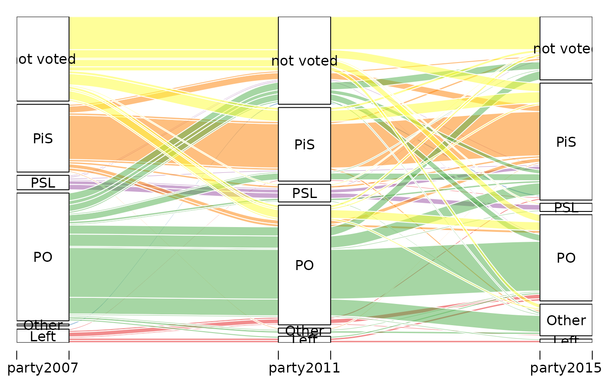
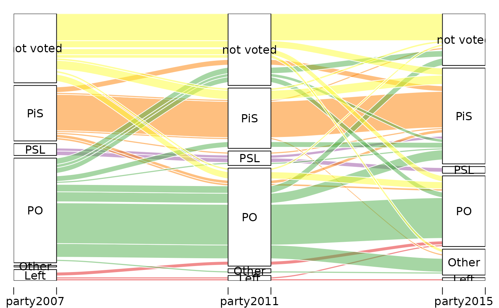
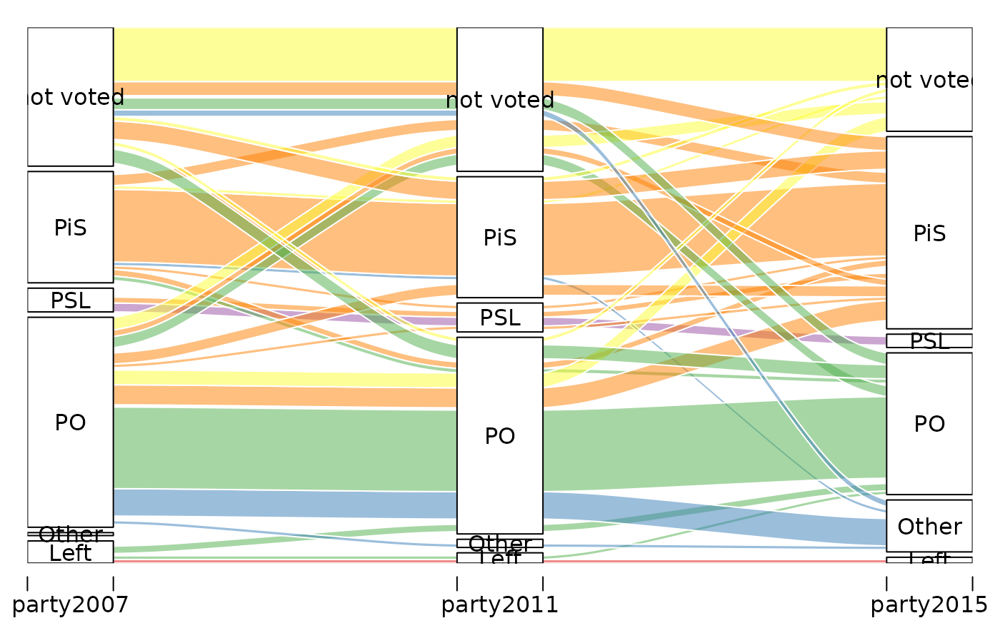

Voting choices across three consecutive Polish parliamentary elections (2007, 2011, 2015) reported by respondents of the Polish Panel Study (POLPAN). Each row represents a unique combination of voting choices and gives the number of respondents with that pattern.
Usage
data(Polpan)Format
A data frame with 51 rows and 4 columns:
- party2007
Party voted for in the 2007 parliamentary election.
- party2011
Party voted for in the 2011 parliamentary election.
- party2015
Party voted for in the 2015 parliamentary election.
- n
Number of respondents with this combination of voting choices.
Each of the partyXXXX columns takes one of the following values:
"PO" (Civic Platform / Platforma Obywatelska),
"PiS" (Law and Justice / Prawo i Sprawiedliwosc),
"PSL" (Polish People's Party / Polskie Stronnictwo Ludowe),
"Left" (left-wing parties),
"Other", or
"not voted".
Source
Polish Panel Study (POLPAN, https://www.polpan.org), Marta Kołczyńska (https://martakolczynska.com/) and her blog post.
Examples
# color palette
p <- c("#E41A1C", "#377EB8", "#4DAF4A", "#984EA3",
"#FF7F00", "#FFFF33")
# How did the 2007 voters vote in subsequent elections?
alluvial(
Polpan[,1:3],
freq = Polpan$n,
col = p[match(Polpan$party2007, sort(unique(Polpan$party2007)))]
)

# Remove flows with freqs less than 10
alluvial(
Polpan[,1:3],
freq = Polpan$n,
col = p[match(Polpan$party2007, sort(unique(Polpan$party2007)))],
hide = Polpan$n < 5
)

# How did the 2015 voters vote in preceding elections?
alluvial(
Polpan[,1:3],
freq = Polpan$n,
col = p[match(Polpan$party2015, sort(unique(Polpan$party2007)))],
hide = Polpan$n < 5
)
